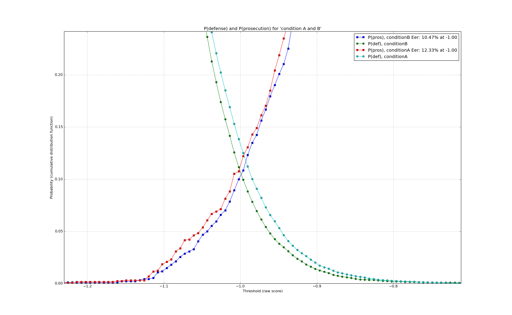

EER plot¶
Will plot a cumulative score plot showing the odds of a false positive and false negative versus the raw scores. In order to draw the curves, the number of scores equal to or bigger than a threshold are counted. This is done for a number of threshold values. The number can be set via nrSamples4Probability in bioplot.cgf in section [probability]. The default is 250 steps.
Example command:
python ./bioplot.py -e "condition A and B" -f input/testdata_AB.txt -E
All plots are shown in a window that allows you to zoom in on events. Here the plot is zoomed in around the intersection points of the graphs.
